Simulate Source's iconic lighting right inside the editor!
Highly configurable for quality and speed, and supports dynamic updating.
Access it by pressing the "camera" button and select "3D Lighting Preview".

Quickly convert the selection into an instance. The instance will be placed in the correct place automatically.
Acessible in Tools -> Create Instance from Selection.

Show the main map while editing an instance. Useful for aligning instance geometry to the main map.
Accessible via the new "Edit Instance with Preview" button in entity properties or by middle clicking an instance in 3D view.

Display a preview of the 3D skybox right inside your map. The 3D skybox is rendered with the same behavior as in-game.
To use, convert your 3D skybox section into an instance if it isn't one already. (Use the new Convert Selection to Instances tool for this!)
Ensure the instance has a sky_camera entity, as this is used to detect a 3D skybox. Toggleable in the toolbar.
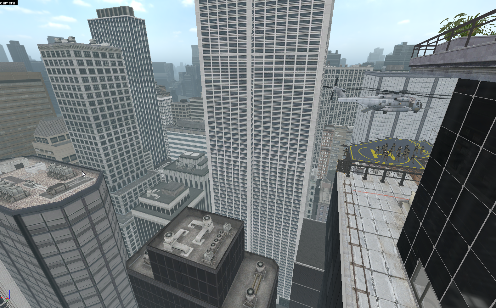
The color picker has a brand new look, making it easier to choose the color you want.
A variety of color model options such as RGB, HSV... are available to use.
The palette of colors is saved per VMF.
Quality of improvement: pressing C with a light or prop selected will quickly open the color picker.

Editor only objects like logic entity sprites or trigger textures can now be hidden for a clean view.
Accessible via the toolbar, or using the following new hotkeys: Ctrl + Shift + F2 to toggle tool textures and Alt + O to toggle editor models and sprites.
Drag the slider to see the difference.


Quality of life improvement: right clicking a keyvalue in entity properties will reset it to default.

Overlays assigned to brushes which get clipped will now preserve the assigned faces afterwards instead of dropping them.

Models and their materials are now properly auto refreshed when externally modified.

The graphics in Hammer++ have received a significant upgrade. It's now much more accurate and prettier.
Drag the slider in the comparison shot below between vanilla Hammer and Hammer++ on ctf_2fort.


Preview particles from an info_particle_system right inside the editor.
Toggleable with 2 new toolbar buttons, whether to draw particles and whether to draw particles from selected particle systems only.

The 2D skybox set in the map properties (worldspawn) is now shown in the 3D view.
This can be toggled with a new button in the toolbar.

Models will be outlined with a yellow glow when selected. Inspired by Source 2 Hammer.
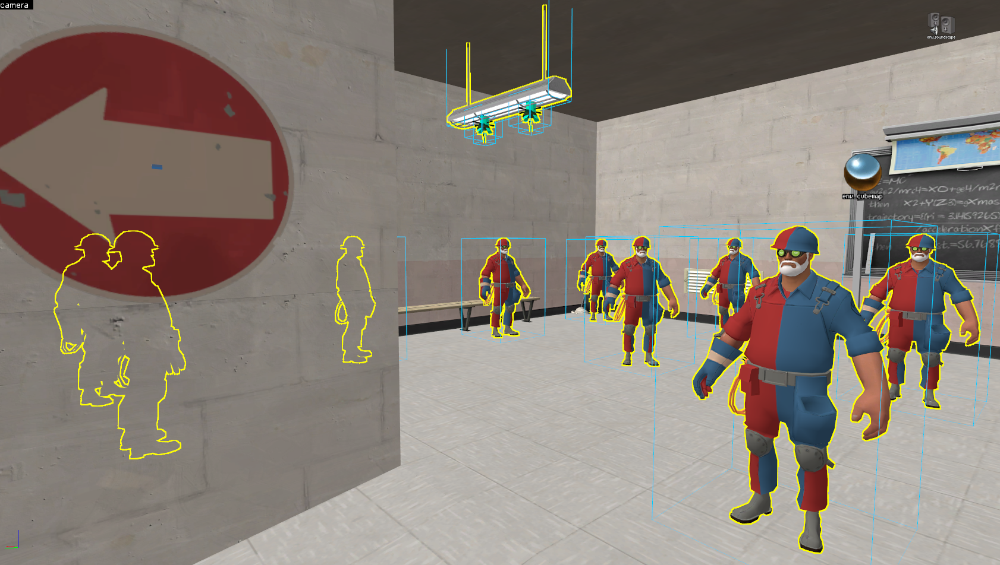
Ropes are accurately displayed in the editor, like they would be seen in-game.
Their physics are also simulated. This can be toggled in the toolbar.

Render effects such as color, translucency, scale, bodygroups, etc. are now displayed.
These can be toggled off or on via a new toolbar button.

Preview env_fog_controllers inside the 3D view, and in realtime. Spooky.
Fog controllers can be swapped by going into View -> Set Fog Preview.

Material proxies such as animated or scrolling textures are now displayed.

Brush luxels are now correctly tinted depending on their intensity,
and static prop lightmap luxels are now displayed.

The 3D grid has been overhauled to be more useful. Toggleable by default with P.
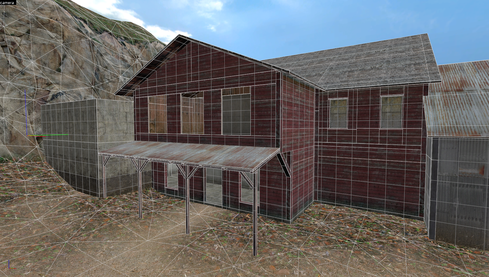
The new editor_text entity can be used to place 3D text in the map.
This is Hammer++ only, it does not work in-game.
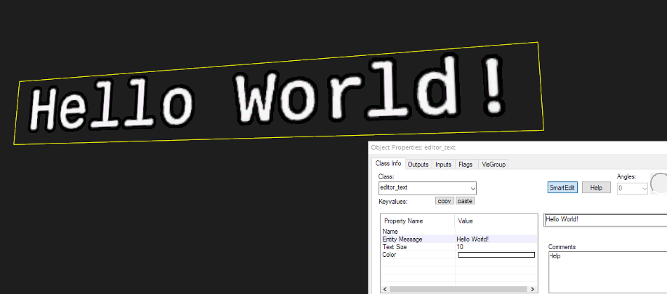
Brushes are now saved with precise vertex data in the VMF.
This means that vertices stay perfectly preserved between sessions, instead of 'drifting away'.
Imprecise old data is still saved for compilers and compatibility with other Hammers.
Imprecise data is also more accurately read in Hammer++, mitigating vertex drift significantly.
Precise data can be toggled in options if you don't want to use it for any reason.
Drag the slider in the comparison to see the difference when saving a cone brush in vanilla Hammer vs Hammer++.

If Hammer++ somehow crashes, a detailed error message will be shown and any open VMFs will be autosaved.

The Gizmo is a new object that allows you to manipulate objects in 3D via translation, rotation or scaling.
Gizmo can be toggled to use either Global or Local transformations, either by clicking the new icon in the toolbar,
or pressing the Ctrl + J keybind.
The Gizmo can be locked to the X, Y or Z axes, or a combination of the two.
The X key will cycle between 3 edit modes: none, box (old workflow) and gizmo.
Pressing right click will cycle between translation, rotation and scaling.

The Pivot is a new adjustable point from where rotations will be applied.
Can be toggled with a new icon in the toolbar or Ctrl + P.
Paste Special can optionally use the pivot as the paste rotation point too.
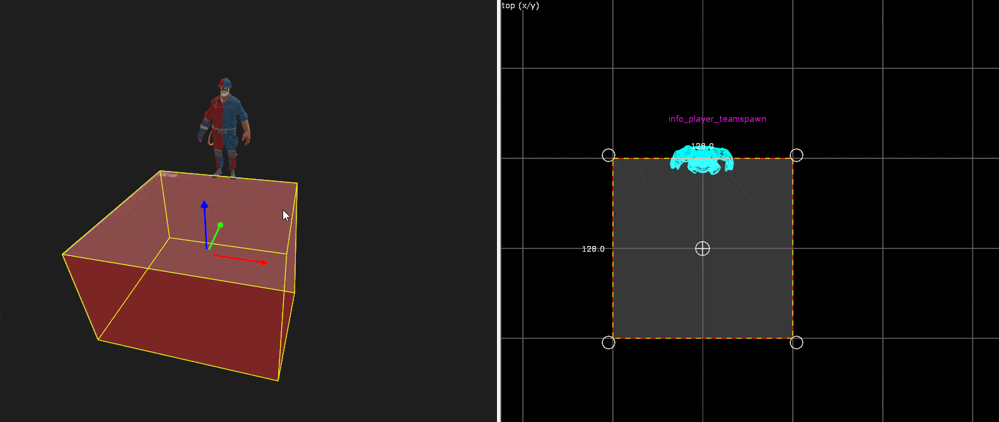
Holding Ctrl + left click now selects anything dragged over the crosshair, allowing for speedy selections of multiple objects.
This also works for face edit sheet/material tool.

New tool that allows you to draw convex shapes in the 2D view by defining sets of points.

Quickly place pre-defined presets around the map.
Ported from CSGO Hammer, with some new additions.

Physically simulate entities, ragdolls or brushes to preserve their pose when simulation is finished.
Drag, explode or shoot objects with left click, middle click and right click respectively.
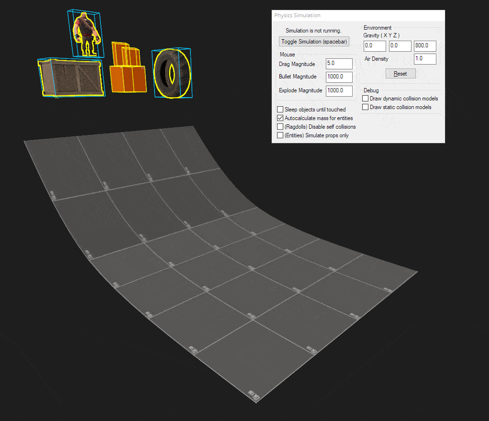
The tool now supports directly modifying UV vectors.
This allows easy creation of certain alignments like skewed textures.
Added new buttons: to quickly apply nodraw, and to randomize the X or Y shift.
The layout has been slightly updated to be more intuitive.

Clipping tool now features 3 point clipping, allowing new kind of clips to be possible.
3 point and 2 point clipping can be toggled with the C key.
Clipping out selected entities is now also possible.
The tool has also been improved by adding handles to 3D view, displaying the clip plane,
and showing objects that will be cut out in red highlight in 3D view.
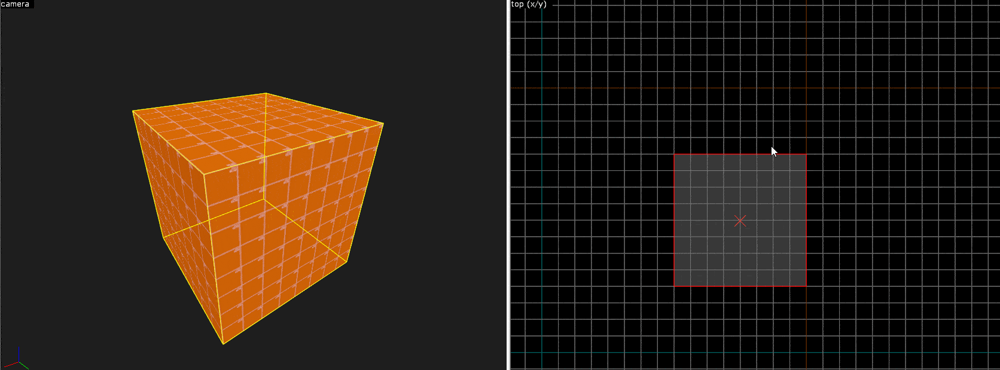
Vertex manipulation tool has been updated to be realtime.
This means you don't need to exit the tool to see changes or undo.
If the shape is invalid, faces are now highlighted in red.

Added support for multiple cordons, ported from CSGO Hammer.
And yes, this does work with stock VBSP compilers.

Merges selected brushes together if they will form a convex shape.
Accessible from new toolbar button or with Ctrl+Shift+M keybind.

This tool moves selected objects to the nearest floor or ceiling.
Optionally, the objects can also be aligned by normal to the surface.

Decimal point grids are now possible, you can decrease the grid size to 0.125, 0.25 and 0.5.
Off by default but it can be enabled in options, if you know what you're doing.
It's also possible to set a custom grid size such as 80x80 in View -> Set Grid Size.
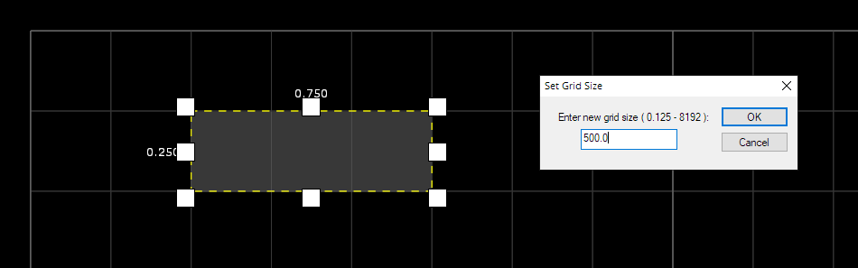
The model browser has received a big upgrade. It features multipanelled display, improved model rendering,
no more dreaded freezing problems, new tab that shows attachments,
and space-separated wildcard filtering, i.e. "debris 128". Negated filtering via ! operator is now available too.

The particle browser is a new browser that allows you preview and select a desired particle system.
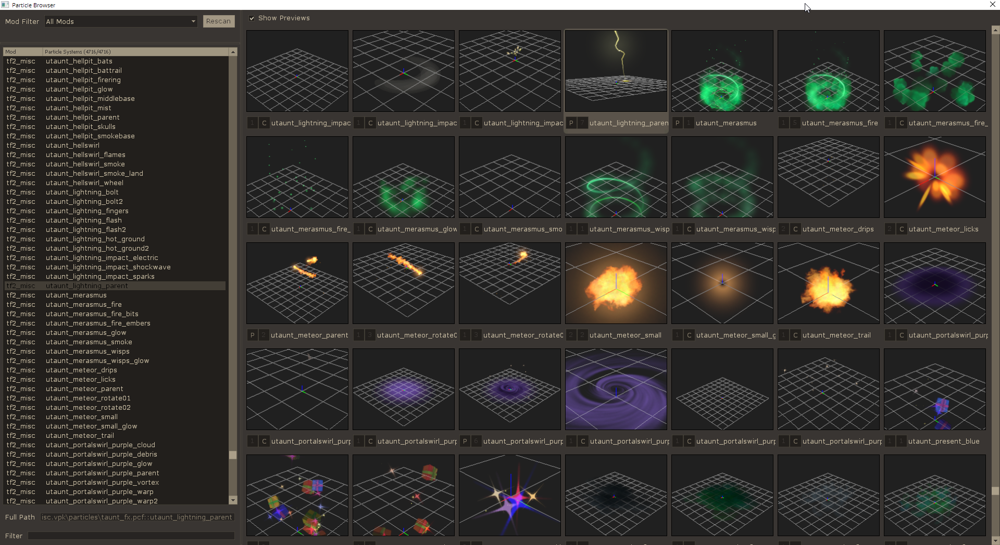
Now features alpha channel display for textures.

The compile window now uses a separate CMD window to compile into,
no longer causing the window and Hammer to freeze when compiling.
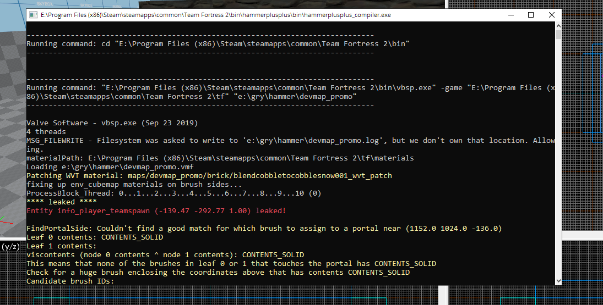
Accessible under Tools -> Keybind Editor, allows you to edit most keybindings in Hammer++.
Unfortunately due to limitations in Hammer's UI, the following quirks are present:
Modifiers (CTRL, ALT, SHIFT) may not work on all bindings,
Some bindings require a refresh of any open maps to take effect,
Mouse bindings are not possible to edit/assign.

Show off to your friends how much hours you waste on Hammer per day!
Can be toggled off in options.

MP3 sounds can now be played in the editor. There is now also an adjustable volume slider for the sound browser.
For source mods using FMOD for .ogg playback, that is also supported.
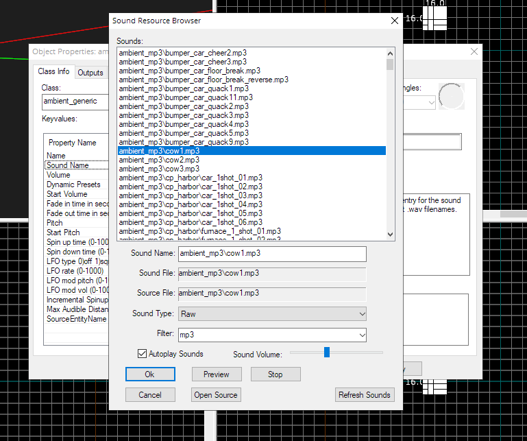

Hammer++ is not affiliated with Valve Corporation. Like or enjoy my work? Support me on Ko-fi.